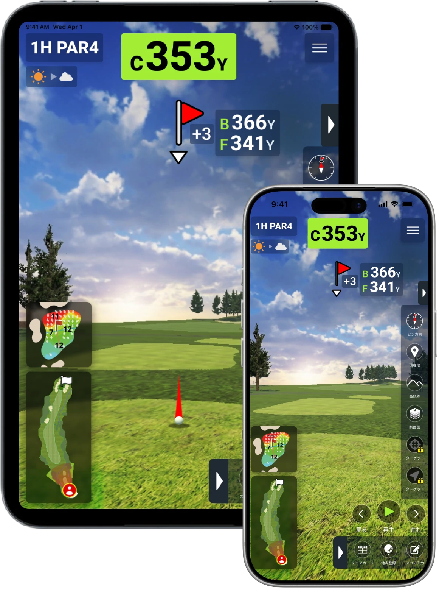

プロモーションLP
Concept
「情報量が多く離脱されやすい」という課題に対し、動きのあるレイアウトと視覚的な強弱でストレスのない導線を設計。AI生成による臨場感あるビジュアルで、製品の高級感と使用感を直感的に伝達
Role
構成・デザイン・AI画像生成・コーディング
（コピー以外を一貫して担当）
Tools
Figma / Photoshop / Illustrator / AI画像生成 /
HTML / CSS / JS

運用型広告バナー制作
Concept
新規ユーザーの興味を瞬時に惹きつけるため、キャンペーンのインパクト重視から世界観を伝えるデザインまで、訴求軸に応じた視覚表現を設計。AI画像生成でバリエーションを展開し、徹底したABテストにより売上を最大4倍、ROASを最大1,600%達成
Role
デザイン・レイアウト構成・AI画像生成
Tools
Figma / Illustrator / Photoshop / AI画像生成

LINEミニアプリUI
Concept
「専門用語が多く、契約内容や発電状況を把握しづらい」という課題に対し、親しみやすいフラットイラストと直感的なアイコン設計で情報の視認性を向上。LINE上で迷わずアクセスできるストレスフリーなUIを構築し、ユーザー自身がいつでも安心して契約状況を確認できる体験を設計
Role
UI/UXデザイン・レイアウト構成・パーツ設計
Tools
Figma / Illustrator

アプリ UI改修
Concept
プレイ中の視認性と直感的な操作性を高め、快適なラウンド体験を実現するUIブラッシュアップ。複雑になりがちな計測・コース情報を整理し、屋外での瞬時の判断をサポートするストレスフリーな画面設計を追求
Role
UI/UXデザイン・レイアウト構成・パーツ設計
Tools
Figma / Illustrator

プロモーション・広告動画制作
Concept
3DCGを活用した臨場感あふれるプロモーション動画の制作から、CVR向上を意識したGoogle動画広告のデザインまでを担当。商品の世界観を直感的に伝えつつ、ユーザーの心を動かすクリエイティブを設計
Role
構成・3DCG制作・動画編集・モーショングラフィックス
Tools
Blender / After Effects / Premiere Pro / Illustrator
Anno Minako 阿武(源田) 未奈子
1996.5.22 生まれ
経歴とキャリアの変化
新卒で約5年間、ベンチャー企業にてファッションデザイナーや生産マネージャーを経験。ものづくりに携わる中で、よりデータや数値成果に直結し、市場のスピード感に対応できる領域への希望が強くなり、Web業界へ転身。
現在はゴルフナビメーカーにて、Web・EC・アプリ・グラフィック領域全般のデザインおよび制作を担当。副業でアプリデザインも行っている。
強み・実績
大まかなコンセプト共有から、構成案の作成・デザイン・コーディング・動画編集まで単独で完結できる対応力が強み。見た目の美しさだけでなく売上やROASなどの数値成果を意識し、参画後は担当広告バナーの売上を最低2倍〜最高4倍、直近ROAS 1,600%を達成。
新しい領域へのキャッチアップが得意で、動画編集や3D（Blender）などを自学で習得し業務に還元。趣味はスポーツ（野球・バスケ等）、お酒、銭湯巡り。オン・オフともにフットワークの軽さと柔軟性を大切にしています。